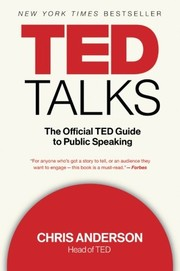
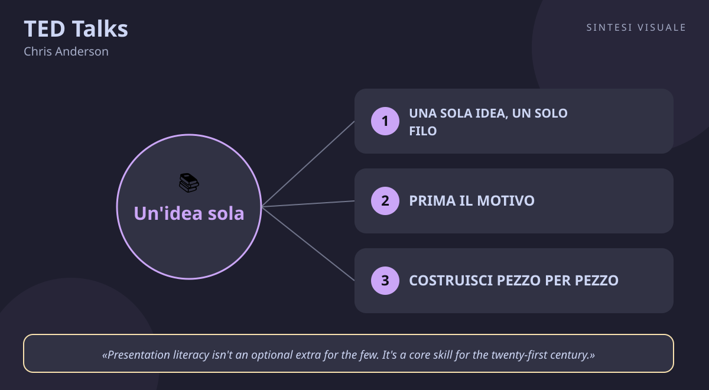

TED Talks
Chris Anderson · Public speaking
«TED Talks»
- Un'idea sola
- Connessione
- Narrazione
- Prova generale
🧭Introduzione
Chris Anderson è l'imprenditore e giornalista britannico che nel 2001, con la sua fondazione nonprofit, ha acquisito le conferenze TED e le ha trasformate nel fenomeno mondiale delle "idee che meritano di essere condivise". In quindici anni dietro le quinte ha lavorato con i relatori più visti di sempre — da Sir Ken Robinson ad Amy Cuddy, da Bill Gates a Elizabeth Gilbert, da Salman Khan a Monica Lewinsky — vedendo da vicino cosa distingue un discorso che elettrizza la sala da uno che si dimentica prima dell'applauso. Uscito nel maggio 2016, il libro è diventato bestseller del New York Times; Adam Grant lo ha definito il libro più illuminante mai scritto sul parlare in pubblico.
Perché questo libro conta oggi: non saliamo tutti su un palco rosso e rotondo, ma presentiamo tutti, ogni settimana — riunioni, colloqui, lezioni, video, pitch ai clienti. La capacità di presentare non è un optional per pochi eletti: è una competenza di base del ventunesimo secolo. E a differenza dei manuali scritti da osservatori esterni, questo è il metodo di chi i discorsi li costruisce davvero, provandoli con centinaia di relatori veri.
A chi è utile: a chi deve presentare e ha paura di annoiare; a manager e professionisti che vogliono farsi capire invece di leggere slide; a insegnanti, studenti e chiunque abbia un'idea che merita un pubblico.
📘Riassunto
La scintilla centrale: un discorso fatto bene può elettrizzare una stanza e cambiare la visione del mondo del pubblico — può essere più potente di qualsiasi cosa scritta. Non esiste una formula unica (due discorsi uguali sarebbero due discorsi sbagliati), ma esistono ingredienti essenziali che chiunque può imparare: il tuo compito numero uno è trasferire nella mente degli ascoltatori un dono straordinario, un oggetto strano e bellissimo che chiamiamo idea.
La struttura logica procede in quattro atti:
- Le fondamenta — trova l'idea che conta davvero per te e dalle un filo conduttore (la through-line): una sola frase che lega tutto ciò che dirai, dall'apertura alla chiusura.
- Gli strumenti — le cinque tecniche per costruire il discorso: connessione, narrazione, spiegazione, persuasione e rivelazione (più tre errori da evitare assolutamente).
- La preparazione — visual sobrie che servono l'idea (mai il contrario), copione sì o no, e soprattutto prove generali: il discorso si costruisce a voce alta, non nella testa.
- Il palco — guardaroba, gestione dei nervi, presenza scenica: come arrivare al giorno X calmo, autentico e pronto.
Il punto di svolta: le quattro regole per costruire un'idea nella mente del pubblico — limita il tuo discorso a una sola idea principale; dai agli ascoltatori un motivo per interessarsene; costruiscila pezzo per pezzo usando concetti che il pubblico già capisce; rendila degna di essere condivisa. È il momento in cui il lettore capisce che parlare bene non è talento: è architettura.
L'eredità oggi: il libro ha restituito alla retorica la dignità di competenza civile essenziale — non arte dei politici, ma strumento di ogni cittadino che abbia qualcosa da dire. E ha fissato lo standard contro cui si misura ogni guida successiva: Gallo (Talk Like TED) osserva i discorsi da fuori, Anderson li costruisce da dentro.
💡Concetti chiave
- Una sola idea, un solo filo: limita il discorso a un'idea principale e cuci tutto attorno a una through-line.
- Prima il motivo, poi l'attenzione: nessuno ti deve ascolto gratis — dagli un motivo per interessarsi nei primi secondi.
- Costruisci pezzo per pezzo: parti da ciò che il pubblico già capisce e aggiungi un mattone alla volta, con metafore ed esempi.
- Racconta storie, non elenchi: la narrazione è il veicolo, l'idea è il passeggero.
- Persuadi con onestà: mostra il ragionamento, ammetti i limiti, niente trucchi — la credibilità convince più della furbizia.
- Prova a voce alta, tante volte: il discorso nasce nelle prove generali, non nella testa; i nervi si gestiscono preparandosi, non sperando.
📖1. Una sola idea, un solo filo
- Definizione la through-line è la spina dorsale del discorso — una frase di circa quindici parole che riassume l'unica idea che vuoi piantare nella mente del pubblico. Tutto ciò che dici deve collegarsi a quel filo; ciò che non si collega si taglia, per quanto ti piaccia.
- Esempio devi presentare il nuovo gestionale al team e hai 14 argomenti (costi, funzioni, tempi, formazione...). Through-line: "questo strumento ci restituisce due ore a settimana a testa". Costi, funzioni e tempi entrano solo se servono a sostenere quella frase; il resto finisce in un documento allegato.
- Come applicarlo prima di preparare qualsiasi intervento, scrivi la tua through-line in 15 parole. Poi elenca i punti che vorresti toccare e cancella senza pietà quelli che non la sostengono. Se due idee competono, hai due discorsi: scegline uno.
- Errore comune voler dire tutto "perché è tutto importante". Le idee sono complesse: se ne ammucchi cinque, il pubblico ne trattiene zero. Tagliare non è perdere contenuto, è regalare chiarezza.
- Collegamento McKeown (Essentialism) e la regola "se non è un sì chiaro, è un no chiaro"; Sinek (Start with Why) sul partire da un unico perché.
📖2. Prima il motivo, poi l'attenzione
- Definizione la connessione è la prima delle cinque tecniche: nei primi secondi devi accendere la curiosità o toccare un'emozione — una domanda, un paradosso, una storia personale, un dato sorprendente. Dai agli ascoltatori un motivo per interessarsi, prima di chiedere la loro attenzione: l'attenzione si guadagna, non si pretende dal ruolo.
- Esempio apri la riunione con "vi leggo l'ordine del giorno" e metà sala apre il telefono. Apri invece con "la scorsa settimana un cliente ci ha detto che il nostro manuale è incomprensibile: vi racconto cosa è successo" e i telefoni spariscono. Stesso contenuto, destino opposto.
- Come applicarlo riscrivi i primi 30 secondi del tuo prossimo intervento come un gancio: una domanda a cui il pubblico vuole la risposta, un piccolo mistero, un aneddoto vero. Provalo su una persona: se non chiede "e poi?", riscrivilo.
- Errore comune aprire con scuse ("non sono bravo a parlare"), ringraziamenti infiniti o la propria biografia. Il pubblico nei primi secondi decide se restare mentalmente in sala: non sprecare quell'istante parlando di te invece che di ciò che gli serve.
- Collegamento Heath (Made to Stick) sul "gap di curiosità"; Cialdini (Pre-Suasion) sui momenti privilegiati che orientano l'attenzione.
📖3. Costruisci pezzo per pezzo
- Definizione la spiegazione è l'arte di rendere comprensibile il nuovo partendo dal noto: prendi concetti che il pubblico possiede già e aggiungi un mattone alla volta, usando metafore, analogie ed esempi concreti. Mai saltare dal semplice al complesso senza i gradini intermedi.
- Esempio devi spiegare ai nonni come funzionano le videochiamate. Non parti dai protocolli: parti dal telefono ("è come telefonare"), aggiungi la televisione ("ma ti vedi in faccia come in TV"), poi mostri il pulsante verde. Tre mattoni noti, un'idea nuova costruita sopra.
- Come applicarlo per ogni concetto difficile del tuo discorso, chiediti "cosa sa già il mio pubblico a cui posso appoggiarmi?". Scrivi la metafora prima dei dati: i numeri convincono solo dopo che l'immagine ha fatto capire.
- Errore comune il "gergo da addetti" e la maledizione della competenza — dare per scontato ciò che per te è ovvio. Se il pubblico deve tradurre mentalmente le tue parole, smette di seguirti e finge di capire.
- Collegamento Kahneman (Pensieri lenti e veloci) sul Sistema 1 che capisce per immagini; Carnegie sul parlare di ciò che l'interlocutore conosce.
📖4. Racconta storie, non elenchi
- Definizione la narrazione è il secondo strumento: una storia vissuta (tua o di altri) trasforma un'affermazione astratta in esperienza condivisa. Il pubblico dimentica gli elenchi puntati ma ricorda le persone, i conflitti e le svolte — e con essi ricorda l'idea che la storia incarnava.
- Esempio "la perseveranza conta più del talento" scivola via. Raccontare di quella collega bocciata due volte che studiava in treno ogni sera e oggi guida il progetto — stessa idea, ma ora ha un volto, e il pubblico la ripeterà a cena.
- Come applicarlo per ciascuna delle tue idee principali trova una storia vera che la incarni (tua o testimoniata). Struttura minima: situazione, ostacolo, svolta, lezione. Una storia per idea basta; tre storie per un discorso da dieci minuti sono già troppe.
- Errore comune raccontare aneddoti decorativi che divertono ma non dimostrano nulla — il pubblico ride e dimentica il punto. Ogni storia deve terminare esattamente sull'idea che deve sostenere: se puoi toglierla senza perdere il filo, toglila.
- Collegamento Gallo (Talk Like TED) sulle storie come collante emotivo; Frankl (L'uomo in cerca di senso) sulla forza dell'esperienza vissuta come prova.
📖5. Persuadi con onestà
- Definizione persuasione e rivelazione sono gli ultimi due strumenti: mostra il tuo ragionamento passo passo (non solo la conclusione), anticipa le obiezioni e ammetti onestamente i limiti di ciò che sostieni. La vulnerabilità sul palco non è debolezza: è il segnale che sei una persona vera, e le persone vere vengono credute.
- Esempio in una trattativa con un cliente, invece di nascondere il punto debole del prodotto, lo dichiari per primo: "su questo aspetto il concorrente costa meno; vi spiego perché abbiamo scelto diversamente". Il cliente smette di cercarti in fallo e inizia ad ascoltare le tue ragioni.
- Come applicarlo nel tuo prossimo discorso inserisci una frase di onestà preventiva ("questo non risolve X, ma su Y cambia tutto perché..."). Elenca le tre obiezioni più probabili e rispondi a ciascuna prima che qualcuno le sollevi.
- Errore comune credere che persuadere significhi nascondere i difetti e gonfiare i pregi. Il pubblico fiuta la propaganda in pochi secondi e alza le difese; un oratore che ammette un limite guadagna il credito per tutto il resto.
- Collegamento Cialdini (Le armi della persuasione) sull'autorità che nasce dalla credibilità; Voss (Never Split the Difference) sull'etichettare le paure dell'altro per disinnescarle.
📖6. Prova a voce alta, tante volte
- Definizione la preparazione è metà del libro per un motivo: il discorso non si scrive, si prova. Copione integrale o traccia per punti (Anderson non impone una via unica), visual ridotte al minimo e al servizio dell'idea, e soprattutto ripetizioni a voce alta davanti a persone vere, finché il discorso suona parlato e non recitato.
- Esempio hai un colloquio importante. Invece di ripassare mentalmente le risposte sul divano, le registri col telefono tre volte: alla seconda scopri che giri attorno al punto per un minuto, alla terza hai già la versione secca. Il giorno dopo non "ricordi il testo": possiedi il ragionamento.
- Come applicarlo per il tuo prossimo intervento, fai almeno tre prove complete a voce alta con cronometro, una davanti a un'amica che può fare domande cattive. Regola i tempi tagliando, mai parlando più in fretta. Il giorno prima, prova abiti, tecnologia e scaletta sul posto se puoi.
- Errore comune memorizzare parola per parola e poi andare in panico al primo intoppo — oppure non provare affatto "perché tanto so l'argomento". Sapere una cosa e saperla dire in pubblico sono due sport diversi; i nervi non si eliminano sperando, si domano preparandosi.
- Collegamento Clear (Atomic Habits) sulla pratica che rende l'esecuzione quasi automatica; McGonigal (Il lato positivo dello stress) sul trasformare l'adrenalina in energia per la sfida.
💬Citazioni da ricordare
"Your number-one mission as a speaker is to take something that matters deeply to you and to rebuild it inside the minds of your listeners. We'll call that something an idea."
Perché conta: è la definizione operativa di tutto il libro — parlare non è esibirsi, è ricostruire: prendi ciò che conta per te e fallo vivere nella testa degli altri. Ogni volta che prepari un intervento, questa frase ti ricorda il vero obiettivo.
"Presentation literacy isn't an optional extra for the few. It's a core skill for the twenty-first century."
Perché conta: abbatte l'alibi del "non sono un oratore". Saper presentare non è un dono per conferenzieri, è alfabetizzazione di base come leggere e scrivere: riunioni, colloqui, video e lezioni lo richiedono a tutti.
"Your number one task as a speaker is to transfer into your listeners' minds an extraordinary gift — a strange and beautiful object that we call an idea."
Perché conta: detta nel TED talk che accompagna il libro, è la versione più poetica della missione — l'idea come dono, non come arma. Ti ricorda che il pubblico non è un nemico da conquistare ma un destinatario da arricchire.
🌍Esempi di oggi
- La riunione del lunedì con quaranta slide. Un collega legge ogni punto fitto di testo mentre la sala sbadiglia; la settimana dopo un'altra collega apre con un problema di un cliente, mostra tre immagini e chiude con una sola richiesta al team. Stessi venti minuti, esiti opposti: la prima ha informato, la seconda ha mosso persone.
- Il colloquio dove elenchi il curriculum. Reciti mansioni e date, e il selezionatore annuisce distratto. Riparti invece dall'idea: "ho passato tre anni a rendere gli ordini online semplici per gli anziani" — poi racconti un caso concreto e solo alla fine colleghi le esperienze. Non hai cambiato il passato, hai cambiato il filo che lo tiene insieme.
- Il video di due minuti per i social. Registri di getto, senza filo né gancio, e dopo quaranta secondi chi guarda scorre oltre. Rifallo con una through-line da quindici parole, un'apertura che crea curiosità e una sola storia vera: stesso telefono, stessa faccia, pubblico triplo.
🛠️Azioni pratiche
- Scrivi la through-line del tuo prossimo intervento. Qualsiasi cosa tu debba dire nei prossimi giorni (riunione, lezione, telefonata difficile), riassumi l'unica idea in una frase di quindici parole e cancella tutto ciò che non la sostiene.
- Riscrivi un'apertura con un gancio. Prendi i primi trenta secondi di un tuo discorso abituale e trasformali in curiosità: una domanda, un paradosso, un aneddoto vero. Provali su una persona e verifica che chieda "e poi?".
- Fai una prova registrata. Registra col telefono una spiegazione di tre minuti su un argomento che conosci, riascoltati e taglia il 30%: gergo, giri di parole, dettagli non necessari. Nota quanto la versione corta è più forte.
💎Da portare a casa
Non servono talento né carisma: serve un'idea che conta, un filo che la tiene insieme e abbastanza prove da farla sembrare conversazione — il resto è coraggio di salire sul palco.
💬Approfondimento in chat
Rispondi con il numero di un concetto (1–6) per espanderlo con altri esempi ed esercizi, oppure chiedimi di collegarlo a un tema — vendite, negoziazione, persuasione, stress, emozioni, carriera — e te lo mostro in azione.
🖼️In un colpo d’occhio

Tocca l’immagine per ingrandirla.